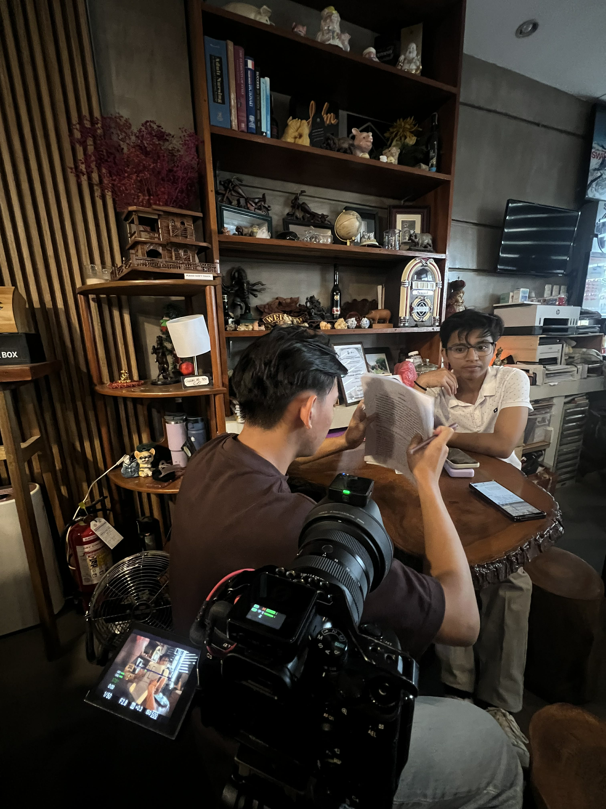

Kujin Production
Graphic Designer • Video Editor • Photographer • Cinematographer
About Me
I am Cyrus Macrohon, a 19-year-old aspiring filmmaker based in Davao City, Philippines. I focus on cinematic storytelling through film, photography, and visual design. My work is inspired by real moments, emotions, and quiet stories that often go unnoticed.

My favorite equipment — the Sony A7 IV paired with the Sigma 28–70mm f/2.8.